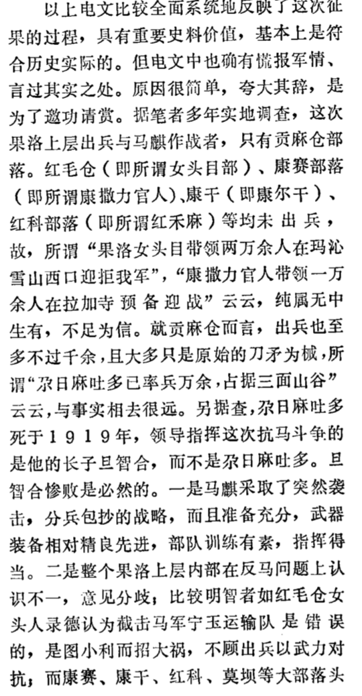
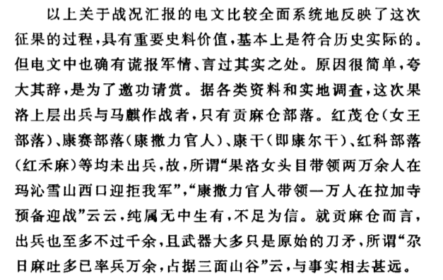
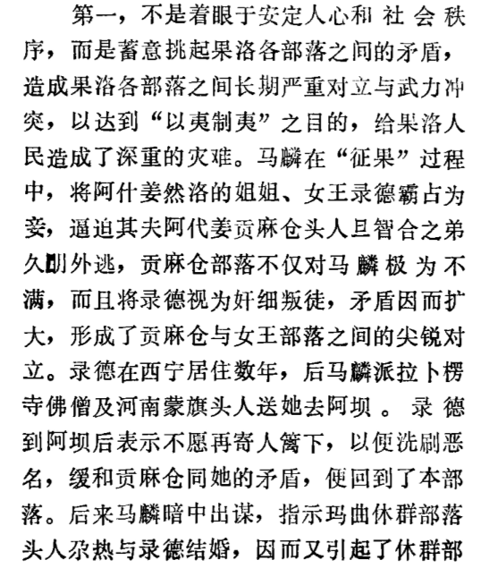
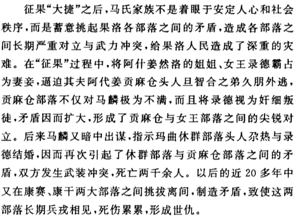
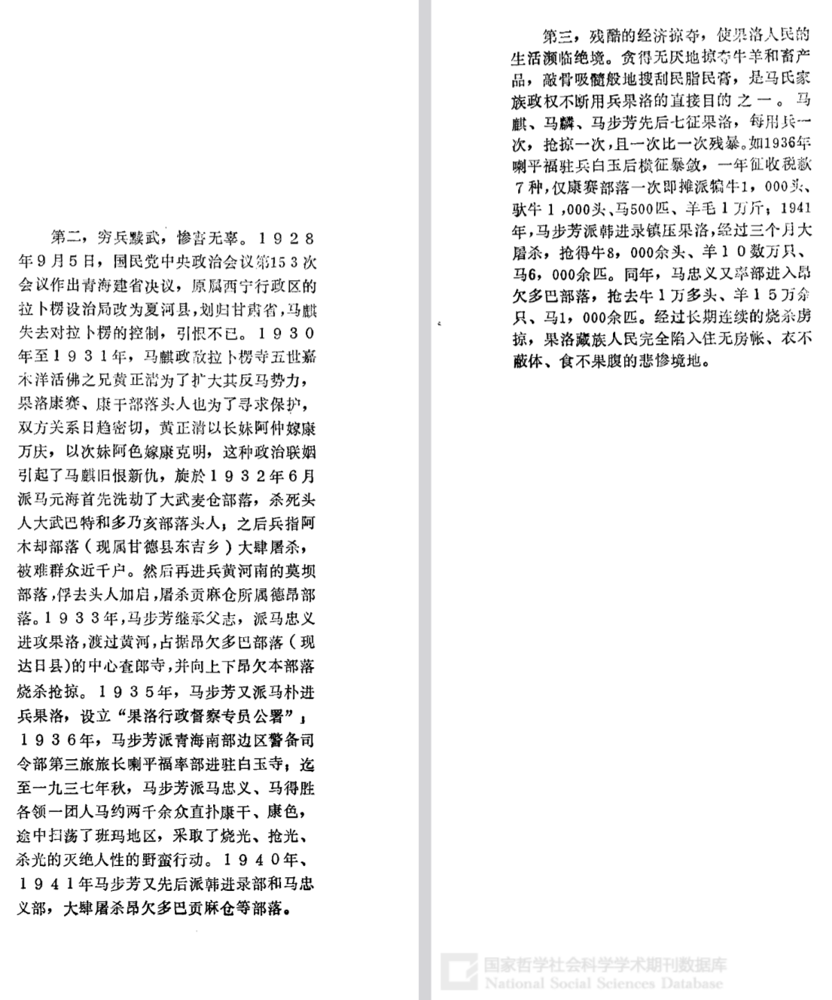
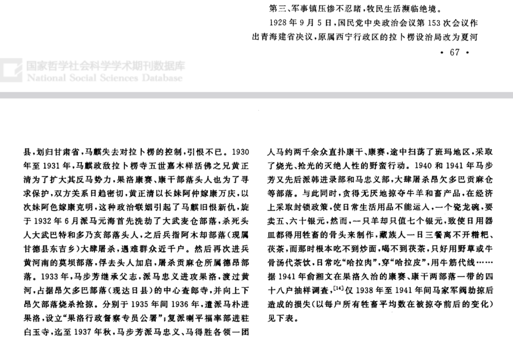

这份论文有学术不端的嫌疑：果毛吉《马步芳家族用兵果洛始末 》，《青海师范大学学报：社会科学版》，2011 年第 6 期，62 - 68 页。
本文所引用论文均见于由中国社会科学院牵头，教育部、新闻出版广电总局配合建成的国家哲学社会科学文献中心。
本文所引用论文：
【果 11】一文在参考文献中明确引用了【张 89】一文，这充分说明果毛吉本人知道【张 89】一文的存在。
我对果毛吉学术不端的指控之原因：【果 11】中出现了大量与【张 89】几乎完全一致的段落，而果毛吉在熟悉【张 89】一文的前提下，未引用文章来源。
| 张 89 | 果 11 |
|---|---|
 |
 |
| 张 89 | 果 11 |
|---|---|
 |
 |
| 张 89 | 果 11 |
|---|---|
 |
 |
我不禁好奇，这位果毛吉究竟何许人也？根据【果 14】，在 2014 年，“果毛吉，女，藏族，青海贵德人，中央民族大学藏学院博士研究生，青海师范大学民族师范学院副教授，主要研究方向为藏族文化。”
另外，根据国家哲学社会科学文献中心的搜索结果，1988 年，有一个名为果毛吉的人在《青海师范大学学报（社会科学版）》上发表了一篇关于某藏文拼音教科书的论文，这份论文的发表，充分说明了至少这篇文章的作者“果毛吉”已经在 1988 年具备某种程度的学术操守。如果【果 88】的作者和【果 11】的作者是同一人，那么我们有充分的理由断言【果 11】的作者果毛吉对学术规范、学术操守至少有初步的了解。
但是从我提供的证据来看，【果 11】可能一时间“忘记了”引用参考文献，而这是绝对不应该发生的。
这就是抄袭。
关于我对果洛部落本身的文字，参见历史笔记 - 果洛部落。